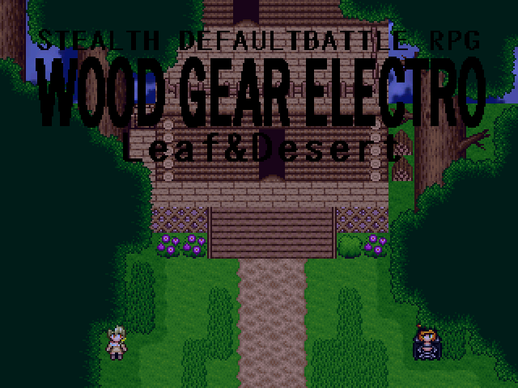

No.26 WOOD GEAR ELECTRO：Reef＆Desert |
|
 |
|
| 作者：大富豪の大貧民役 | |
| ツクール：2000 | |
| ジャンル：ステルスデフォ戦RPG | |
| 配信/投稿：無記入 | |
| 作者コメント： ＝ライスパークの日記＝ ある日、私は砂漠化委員会会長のダークアーディスから依頼を受けた。 緑化委員会の施設に侵入し、緑化委員会会長アーディスの弱みを手に入れるのがその内容だった。 玉露軍は暇だったし、何よりしょうもない割には良い金額の給料ももらえるし、その日の晩御飯まで ご馳走してくれると聞き、私は喜んでその仕事を受けた。 そうして、私は緑化委員会の施設に単独潜入を行った。晩御飯までには終わる仕事のはずだった。 そこで私が見たものは、弱み以上の、世界を揺るがすような物だった。 久々にデフォ戦作ります。 デフォ戦よりも、ストーリーよりも、MGSでよく見るネタ無線会話に一番時間取ると思います。 |
|
| 管理人コメント： ライスパ、今すぐF12を押すんだ！ |
|
| ダウンロード(0.00MB) / 感想掲示板 | |
| 前の作品 / 次の作品 / TOPへ戻る | |